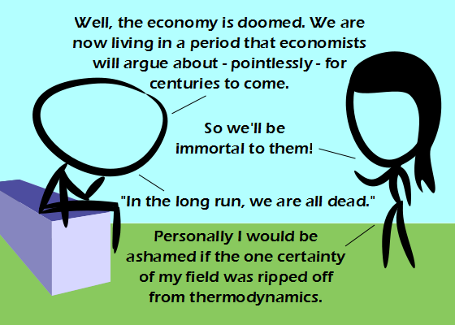

Comic JK 742
When I Feel Like It
⇤
<
?
>
⇥

⇤
<
?
>
⇥
Forum
.
RSS
.
Digg
.
Facebook
.
Reddit
.
Twitter
.
Stumbleupon
Enter your thoughts on number 742 here. Please, no spamming, trolling, phreaking, or ripping off from thermodynamics. Economic entropy! >We are reaching the point that Star Trek predicted in which mankind will cease to use currency! This means Warp Drive can't be far behind! >> Yay, Warf drive .>>All we need now is replicators. >>>And the Third World War. (It happened in Star Trek, the Warp Drive was invented *afterwards*) >>>Enough wealth for everybody to make money obsolete. >>>>Wasn't it also predicted, that after some brutal riots, governments finally did something about the so called underclass, racism and poverty. Riker in some episode went back to that time and explained how it happened. See GB... >>>>>If only. Aren't the certainties in all fields ripped off from thermodynamics? >>>>>>Sure, but all of this was only made possible because ~90% of the population was killed off during WWIII. I disagree. >I digress. >>I divorce. ARE YOU REUSING BACKGROUNDS????? D: